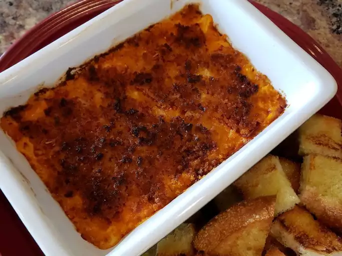

Odin Recipes
Pepperoni Pizza Dip

Description
This dip for 2 was inspired by my love of pizza but also wanting a dip.
Ooey gooey cheese, savory pepperoni and a crisp panko crust really hits the spot on chilly afternoons!
Serve with toasted bread pieces or crackers.
Ingredients
- 2 tablespoons freshly grated Parmesan cheese, divided
- 2 tablespoons shredded mozzarella cheese, divided
- ½ (8 ounce) tub cream cheese, softened
- ⅓ cup pizza sauce, purchased or homemade
- 8 ounces pepperoni, chopped
- 2 tablespoons butter, melted
- ¼ cup panko bread crumbs